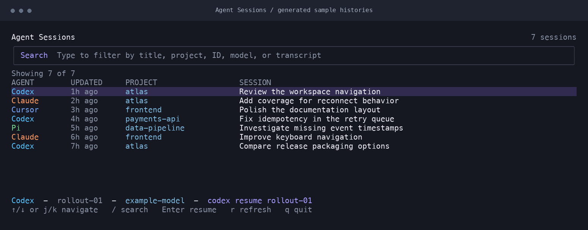

Pick up where
you left off.
One terminal view across ten coding agents. Search the work you remember, find its session, and resume without hunting for an ID.


Ten tools. One list.
Local agent histories normalized into a focused terminal browser.
Remember a detail.
Find session metadata and words from file-backed conversations.
Continue the work.
Hand your terminal to the selected provider CLI.
Installation
Install with Go 1.24 or newer. The application runs in your terminal; it does not require a server or account.
go install github.com/natelindev/agent-sessions-tui/cmd/agent-sessions-tui@latest
agent-sessions-tuiGo installs into GOBIN, or GOPATH/bin when unset. Add that directory to your shell’s PATH.
Install from a checkout
git clone https://github.com/natelindev/agent-sessions-tui.git
cd agent-sessions-tui
./scripts/install.shThe installer builds the checkout and installs atomically into XDG_BIN_HOME or ~/.local/bin. Use --bin-dir to select another destination.
./scripts/install.sh --bin-dir ~/.local/bin
agent-sessions-tui --versionBrowse, search, resume
Launch the app to discover local sessions. Rows show the provider, recency, project, and session title. Select a session, then press Enter to resume it in the current terminal.
| Action | Keyboard | Mouse |
|---|---|---|
| Move | Arrows, j / k, Page Up / Down | Scroll wheel |
| Search | / then type | Click search field |
| Leave search | Enter or Escape | Click row |
| Clear search | Escape outside search | — |
| Resume | Enter | Double-click row |
| Refresh | r | — |
| Quit | q or Ctrl+C | — |
Find the work, not just the title
Search is case-insensitive. Space-separated terms use AND matching across provider, ID, title, project, working directory, model, path, and indexed transcript text. Try codex payments or a distinctive word from a later message.
File-backed sessions index the full transcript and deduplicate search terms. Database-backed OpenCode and Hermes sessions use their metadata. This is a session browser; it does not display full conversations or images.
Resume behavior
The app hands the terminal to the provider process and returns when it exits. Resume uses an executable plus argument array, rather than a shell command string. It uses the selected session’s working directory when that directory still exists.
Supported providers
Ten provider adapters normalize local histories into one list. Storage formats can change when upstream tools update; report a small redacted fixture if an adapter stops recognizing sessions.
| Provider | Local store | Resume command |
|---|---|---|
| Codex | ~/.codex/sessions and archived_sessions | codex resume <id> |
| Claude | ~/.claude*/projects and transcripts; desktop local sessions | claude --resume <id> |
| Antigravity | ~/.gemini/antigravity*/brain | agy --conversation <id> |
| OpenCode | ~/.local/share/opencode/opencode.db; legacy JSON | opencode --session <id> |
| Hermes | ~/.hermes/state.db and sessions | hermes --resume <id> |
| Copilot CLI | ~/.copilot/session-state | copilot --resume=<id> |
| Droid | ~/.factory/sessions and projects | Discovery only |
| OpenClaw | ~/.openclaw/agents; legacy ~/.clawdbot/agents | Discovery only |
| Cursor Agent | ~/.cursor/projects/*/agent-transcripts | cursor agent --resume <id> |
| Pi | ~/.pi/agent/sessions | pi --session <path-or-id> |
OPENCLAW_STATE_DIR overrides the OpenClaw state root. The app also checks the legacy Clawdbot directory.
Discovery, cache & privacy
Provider stores are opened read-only. The app writes its own private SQLite search cache so later launches can display a snapshot before background validation finishes.
Incremental refresh
Unchanged file-backed transcripts are reused by path, size, and modification time. Changed and removed files are updated during scanning. Press r to refresh after another coding session.
Where the cache lives
For your normal home, the cache is agent-sessions-tui/sessions-v1.sqlite3 beneath Go’s operating-system user cache directory: ~/Library/Caches on macOS, XDG_CACHE_HOME or ~/.cache on Linux, and the user cache location on Windows.
With a different --home, it lives beneath that home’s .cache/agent-sessions-tui/. The cache includes session metadata and searchable transcript terms; treat it as private, like the original histories. No analytics or remote synchronization is part of the application.
Command line
| Option | Behavior |
|---|---|
--home PATH | Read provider stores from this home. Defaults to the OS home directory. |
--version | Print application version and exit. |
--help | Print flags and control reference. |
agent-sessions-tui --home /path/to/example-home
agent-sessions-tui --version
NO_COLOR=1 agent-sessions-tuiThe palette adapts to light and dark terminals. Set NO_COLOR for uncolored output. Narrow terminal layouts hide lower-priority columns; widen the window to see more context.
Troubleshooting
No sessions found
Check the home directory and provider stores above. Sessions must have been saved by a supported tool. If using a custom home, pass it with --home. Unreadable or malformed files may be skipped.
A resume command fails
Check that the provider executable is on PATH, its session ID still exists, and its authentication is current. Update the CLI if its resume flags changed. Discovery-only rows cannot be resumed.
Search results look old
Let the background scan finish or press r. A cache warning means the app could not read or write its own snapshot; check cache-directory permissions.
Terminal rendering looks wrong
Use a UTF-8 terminal and a font with box-drawing characters. Resize the window or try NO_COLOR=1.
Report an adapter issue
Include OS, application and provider versions, the affected store format, and a redacted example. Remove prompts, source code, access tokens, and private paths before sharing a transcript.
Development & contribution
The project separates discovery, normalized sessions, resume commands, and Bubble Tea UI state. Prefer focused tests for parsers, caching, argument construction, and selection behavior.
go test -race ./...
go vet ./...
go build -trimpath -o ./bin/agent-sessions-tui ./cmd/agent-sessions-tuiSee contributor guidance for screenshot fixtures and documentation publishing.